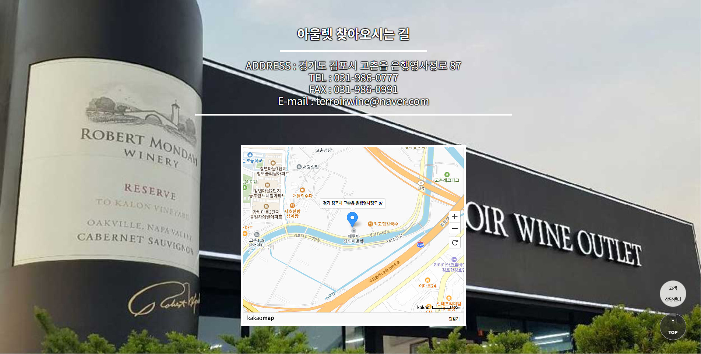
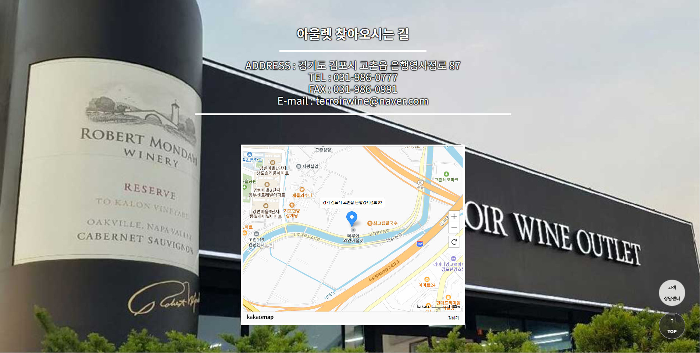

안녕하세요. 김우주 입니다. 제 소개를 해보겠습니다

|
⨀ 2023/02 ~ 2023/08 자바(JAVA)기반 응용SW개발자 과정 수료 (더 좋은 컴퓨터 아트학원) |
|
⨀ 기술스택 Eclipse luna, Eclipse 2019, Sts 3.9.11, VSCode JDK ver : 1.8 , 11 Servlet, Spring Legacy, Spring Boot 등 을 사용한 웹애플리케이션 개발 경험 JavaScript , node.js , ajax , json , jquery 활용 HTML5 , CSS , JSP , JSTL , EL , Validation 활용 Spring security , AES256 , SHA256 , MD5 암호화패턴 활용하여 로그인/가입 기능 db연동 및 구현 JpaRepository , query method 활용 git bash(cli)와 GitKraken(gui) 를 이용한 형상관리 활용 |
|
|
⨀ 다양한 RDBMS 활용 Oracle SQL 11 , MySQL 8.0 , MariaDB 10.6 , Porstgres 12 등을 이용하여 웹애플리케이션 연동 및 활용 하였습니다 |
|
|
⨀ 그 외 다뤄봤던 프로그램 dev c++ 5.11 (c언어) , pycharm 2021 , photoshop 8 , illustrator 11 SolidWorks 2011 , 2020 , 3ds max 5 |
|
포토폴리오1 떼루와 와인아울렛 |
포토폴리오2 소프라노 몰 |
포토폴리오3 함안문화관광 |
포토폴리오4 고봉 소셜웹 |
| < |
아래 사진을 클릭 시 해당 프로젝트 목업페이지로 이동합니다
 

떼루와와인아울렛_작업파일 떼루와와인아울렛_readme.md |
> |
포트폴리오1 - 날코딩 가장 처음으로 시작한 프로젝트입니다 넣지 않아도 될 부분이 될 수도 있었지만 성장 과정 없이 갑자기 팀 프로젝트 등을 추가한다면 제가 한 작업인지 아닌지를 판별할 수 없을 거 같아 추가하게 되었습니다 해당 프로젝트에서는 표현식을 사용하여 DB를 불러왔고 회원에 대한 crud(가입,수정,탈퇴,조회(로그인)) 등을 하였고 공지사항 기능을 넣었으며 session값에 등록된 아이디가 관리자이면 관리자모드를 사용할 수 있도록 적용하였습니다 RDBMS는 postgres 12 를 사용하였고 DB IDE 로는 pgAdmin 4를 사용하여 테이블을 구축하였습니다 해당 프로젝트를 진행하면서 주로 든 생각은 어디까지가 프론트의 영역이고 어디부터가 백앤드의 영역인지 구별되지 않는다는 느낌이 들었습니다 Java server page 가 jsp 이니 백앤드 인것 같으면서도 view의 영역이니 프론트 같기도 한 그 알 수 없는 느낌... 목업 페이지에서는 출력이 되지 않지만 처음으로 카카오 지도를 사용해 보았습니다 이 당시에는 api의 개념을 몰라 카카오developer에서 가지고 오는 게 아닌 js소스를 그대로 갖고 와 사용하여 크게 도움이 되지는 않았지만 흥미로운 작업이었습니다. |
| < |
아래 사진을 클릭 시 해당 프로젝트 목업페이지로 이동합니다
소프라노몰_작업파일 소프라노몰 readme.md |
> |
포트폴리오2 - [MVC2 Servlet] 이 프로젝트를 진행할 때 가장 신경 쓰였던 부분은 코딩도 디자인도 아닌 저작권 위반으로 신고당하지 않을까 하는 부분이었습니다. 하하,, 그래서 외부적인 것들은 거의 뼈대의 형태로 진행하게 되었습니다 해당 프로젝트에서는 OracleSql을 사용하였고 처음으로 MVC2 패턴을 이용하여 모델 뷰 컨트롤러를 나눠 작업하게 되었습니다 프로젝트1에서는 jsp에 모든걸 때려 넣어 이렇게 하나하나씩 다 넣어줘야 하나 싶었던 작업을 작업해 놓은 메소드를 이용해 불러올 수 있으니 편했고 유지보수에 용이하다는 뜻이 뭔지 조금은 알 수 있었습니다 해당 프로젝트에서는 표현식이 아닌 jstl 표현언어를 사용하여 작업하였습니다 서블릿을 사용한 프로젝트라 get방식 post방식에 대해 좀 더 알 수 있는 작업이 되었고 foward와 redirect에 대해 더 알 수 있어 좋았습니다 네이버 SMTP를 사용하여 회원가입 시 회원가입 축하 메일을 전송하게끔 하였습니다 -제 메일과 비밀번호가 적혀있어 해당 부분은 주석처리를 하였습니다 구매할 시 결제 API를 (iam포트,포트원)사용하여 결제단계를 구현했습니다 다음주소api를 사용하여 회원가입, 물건 구입 시 주소를 편리하게 입력할 수 있도록 하였습니다 또한 처음으로 ajax와 JSON 을 사용해 보았는데 이 당시에는 자바스크립트를 제대로 배우지 않아 ajax로 데이터를 전송 또는 받아온 후 비동기로 적용을 하지 않고 해당 페이지를 전체 리 로드 시키면서 그저 window.open() 팝업창을 닫기 전에 전송시키는 용도로 주로 사용했었고 카테고리를 불러올 때 그나마 겨우 적용시켰었 습니다 후에 이 프로젝트를 다 끝내고 난 후 ajax와 json에 대해 더 공부하여 비동기 , 동적 페이지를 더 학습하고 고봉(프로젝트4)에서 적용시키게 되었습니다 crypto.jar 외부 라이브러리를 사용하여 AES256 암호화 패턴으로 회원가입 시 비밀번호를 암호화하여 db에 저장하도록 적용했고 로그인 시 암호화된 비밀번호를 불러와 복호화시켜 사용자 비밀번호와 로그인에 사용된 비밀번호가 같은지를 판별하여 로그인하도록 하였습니다 md5 , sha256의 경우 일정한 패턴이 있는 것에 비해 AES256 암호화 패턴은 시간초에 따른 패턴인지 같은 비밀번호를 이용하여 가입한다고 하여도 매번 바뀐다는 사실을 알 수 있었습니다 장바구니에 있는 것을 구매할 시 장바구니 목록 등을 비워줘야 하니 conn.setAutoCommit(false); 을 사용하여 오토커밋을 꺼놓고 순차적으로 cud를 한 후 commit을 수동으로 하는 방법을 익히게 되었습니다 이 외에도 jquery , multipart/form-data 로 파일을 첨부 request.getParameter로 넘어오는 값 (=) input에서 넘기는 값 등등을 더욱 매끄럽고 어떤 기능이 어디서 작용하는지 알 수 있었고 상점에 관련된 api들도 검색하고 사용해 볼 수 있게 되어 실력향상에 많은 도움이 될 수 있었던 프로젝트였습니다. |
| < |
아래 사진을 클릭 시 해당 프로젝트 목업페이지로 이동합니다
함안관광청_작업파일 함안관광청 readme.md |
> |
포트폴리오3 - [MVC2 Servlet] 처음으로 진행해본 팀 프로젝트 였습니다 팀원과의 의사소통 역할분담 등이 최대 난제였습니다 서로 속도가 맞지않으니 파트를 나눠서 하고 서로 수정하거나 추가하는 부분에서도 몇번이고 엉키게 되었습니다 이 일들은 후에 다음프로젝트를 할때 많이 보안할수 있는 계기가 되었습니다 해당 프로젝트에서는 MySQL 8 을 사용하여 DB를 설계했습니다 oracle sql에서는 rownum과 order by를 같이쓰기위해 select 로 한번 더 구분지어줬었지만 MySQL에서는 LIMIT로 간편하게 쓸 수 있어 좋았습니다. 그 외에도 create user를 하는게 아니라 database를 만들고, conn이 아닌 use로 접속하는것 int , varchar , dateTime 등이 했갈릴때도 있었지만 sql구문만 따로 연습 할때보다 더 도움이 된 프로젝트였습니다 함안군청 프로젝트를 하면서 좀 더 본격적으로 카카오 지도 api를 사용해 볼 수 있었습니다. 카테고리별 장소를 분류해서 지도로 표시한다던가(메인페이지 하단 함안주변지도) 주소로 장소표시 기능을 사용하여 위치를 표시하고 (sub2,3,4) 후에 팀원이 사용하기 용이하게 c:set과 input hidden을 연결시키고 jquery를 사용하여 해당 칸에 주소만 바꿔적으면 위치가 적용되도록 했습니다. 저번프로젝트에서 시간이 촉박하여 페이징 처리를 해 볼 기회가 없었는데 이 프로젝트를 진행하면서 게시글들의 페이징처리를 처음으로 만들어 보게 되었습니다. java로만 알고리즘 짜서 만들때는 금방이였는데 이것을 jsp에 적용하고 db에 불러온 데이터들의 값을 넣어주고 하니 생각보다 더 어려운 작업이었습니다. 이것을 같은 팀원도 편하게 사용할 수 있도록 재구성 하는것에서도 많이 헤맷지만 결국 다 만들고나니 정말 많은 성취감을 느낄 수 있었습니다. 프로젝트2(소프라노몰)에서 마저 못한 기능들을 넣어서 완성해보자는 욕구가 강한 상태로 만들어진 프로젝트라 그때 마저못넣은 별점기능, 페이징기능, 메인페이지에서 공지사항 불러오기 , QnA (고객민원) , 지도기능 등등이 추가되게 되었습니다. 이 프로젝트를 진행하며 가장 도움이 많이된 부분은 다음 팀프로젝트를 하게 될 때 어떤식으로 형상관리를 해야할지 (여기서는 서로 다른 git에서 서로 작업내역만 clone하여 사용하였습니다) 가장 초기에 세팅을 어떤것부터 할 지 등등 팀과의 협업부분이 많이 향상되었던거 같습니다. |
| < |
아래 사진을 클릭 시 해당 프로젝트 목업페이지로 이동합니다
고봉_작업파일 고봉_readme.md |
> |
포트폴리오4 - 고봉프로젝트 [Spring Legacy] 두번째로 진행하게 된 팀 프로젝트 입니다 스프링 레거시로 진행하였으며 레거시 특성상 처음 세팅해야할게 많기 때문에 공통적으로 세팅해야 할 사항들은 세팅한 후 팀원들에게 배포하였습니다 포트폴리오3의 경험을 살려 이번에는 좀더 수월하게 팀 프로젝트를 진행하기 위해 작업내역 노트를 따로 작성하고 진행한 부분들을 주석처리로 하게끔 협의를 보고 DTO,Mapper,DAO,Service 등등의 파일 이름들을 맞춰서 작성하도록 협의를 봤습니다. 항상 느끼지만 머리속에서 계획은 완벽했으나 모든 사람은 똑같지 않기떄문에 틀어지기 마련이죠 갈수록 진행사항을 적지않고 주석을 적지않는 사람도 생기고 탈주자들도 생기고 .. 아이러니 하게도 가장 먼저 취업하신분이 더 고생하셨던 프로젝트네요 딴 이야기로 새어버렸는데 이 프로젝트에서 주로쓰인 기능은 ajax를 이용한 동적 페이지, 비동기 처리 를 주로 사용했습니다 저번 프로젝트들 에서 부족했던 자바스크립트에 대한 지식을 더욱 보충 한 후 진행한 프로젝트이기에 어쩌다보니 ajax위주로 만들게 된거같습니다. 예를 들어 좋아요 부분에서 좋아요를 누를경우 해당 게시글 부분에 append(jquery) 를 사용하여 동적페이지를 구성했고 (이글을 좋아하는사람 목록 , 좋아요 개수) , 댓글을 달 경우에도 댓글창만 비동기로 새로고침을 하여 동적페이지를 구성했습니다 검색기능의 경우에도 자바스크립트로 구현하였는데 팀원이 만들어준 최근검색어창을 활용 하였고 제가 검색기능에서 구현한 것은 최근검색어를 session영역에 저장을 하고 appendChild를 이용하여 새로고침 할 필요없이 최근검색에어 알아서 올라가게끔 한 것과 remove()를 이용하여 최근검색에서 삭제하는것 , 검색된 값을 받아 해쉬태그인지 아이디인지 판별하여 검색하게 하는것을 구현하였습니다. 글쓰기 기능 같은경우 FileReader()객체를 이용하여 비동기적으로 업로드 할 사진에 대하여 미리보기 기능을 구현했습니다. SQL의 경우에는 orcale 11xe 를 사용하였고 Mybatis를 이용하여 crud문을 적어주고 연동시켰습니다 외부라이브러리로는 json cos, commons, lombok등 을 사용하였고 로그인은 스프링 시큐리티를 이용하여 구현하였습니다 validation의 경우 커스터마이징한 유효성검사 값을 추가하여 글쓰기에서 대표사진을 등록하지 않을시 , 해쉬태그 맨 앞에 #이 붙지 않을시 글이 통과하지못하게 하였습니다 이 프로젝트를 하며 가장 힘들었던 부분은 이번에도 팀원과의 소통이 가장 힘들었던거 같습니다 하기 싫은건지 좋은건지 표현이 확실하지 않은게 제일 힘들었습니다 항상 느끼는거지만 일보다 사람이 어려운것 같습니다. 그래도 이 프로젝트를 하며 제 실력이 다른사람과 비교했을때 어느정도 향상되었는지 내 노력이 나에게 얼마나 도움이 되었었는지 알 수 있는 프로젝트였습니다. |